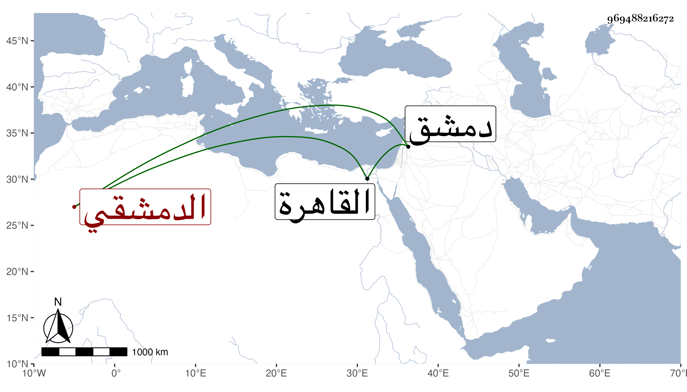

0902Sakhawi.DawLamic.ITO20230111-ara1.EIS1600.969488216272
Biography ID: 969488216272
526
أحمد بن محمد بن محمد بن محمد بن علي بن يوسف الشهاب أبو بكر بن شيخ القراء الشمس أبي الخير الدمشقي بن الجزري المتوسط بين أخويه المحمدين الآتيين . ولد في ليلة الجمعة سابع عشر رمضان سنة ثمانين وسبعمائة بدمشق وأجاز له الصلاح بن أبي عمر والحافظ أبو بكر بن المحب وابن قاضي شهبة وابن محبوب وابن عوض وعبد الوهاب بن السلار وابن عمه إبراهيم ، بل حضر على بعضهم وسمع من أكثر ومما سمعه علي العسقلاني جميع القراءات جمعا للاثني عشر والشاطبية والعنوان وسمعه أيضا على الصلاح البلبيسي والتيسير وغيره من كتب القراءات على السويداوي بل عرض الشاطبية على التنوخي وتلا عليه وعلى أبيه بالعشر وحفظ كتبا وتصدر وأقرأ . هكذا ترجمه أبوه في طبقات القراء له ، وممن أخذ عنه بالقاهرة في سنة سبع وعشرين وثمانمائة الزين عبد الدائم الأزهري وابن أسد وقال أنه أخذ عنه شرحه لطيبة والده ، وآخرون ومات بعد أبيه بقليل .
